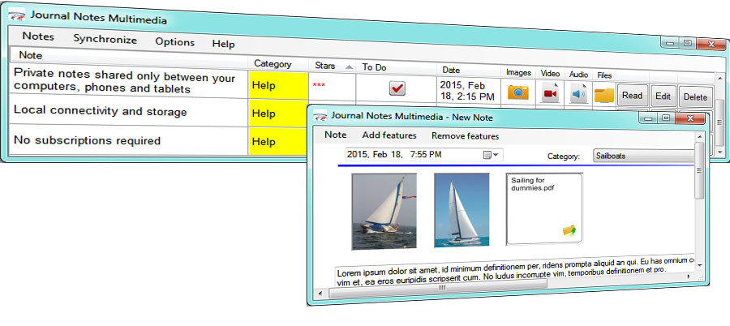

deutsch | english | español | français | italiano | português
Companion Windows® software for Journal Notes Multimedia Android™ and BlackBerry® apps
Wizard Solutions Inc.
Download the free Windows software and synchronize your private notes with Android phones, tablets and with BlackBerry. The software can also be used as a stand-alone application for quick multimedia note-taking, with features like search and export. Journal Notes Multimedia can sync with its companion apps available for download on Google Play and BlackBerry World.
Get the Journal Notes Multimedia Android app on Google Play 
Get the Journal Notes Multimedia app on BlackBerry World
Journal Notes Multimedia syncs with phones and tablets over local wireless - WiFi or USB cable connection. Internet access is not required.
Download the free Journal Notes Multimedia installer

home | download | USB drivers | help | blog | contact
Terms of Service © 2012 - 2015 Wizard Solutions Inc.